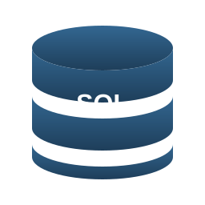

Data Governance Crash Course
A data governance (adatkormányzás) az adatok kezelésének, biztonságának, minőségének és felhasználásának átfogó keretrendszere egy szervezeten belül. Nem egy eszköz vagy egyetlen technológia — hanem politikák, folyamatok, szerepkörök és tooling-ok együttese, amelyek garantálják, hogy az adatok megbízhatóak, biztonságosak és GDPR-kompatibilisek.
Miért szükséges? Három fő okból: (1) compliance — a GDPR, HIPAA, PCI-DSS és más szabályozók megsértése komoly bírságokkal jár (a Meta 2023-ban 1.2 milliárd EUR bírságot kapott). (2) Trust — ha az üzleti felhasználók nem bíznak az adatokban, nem hoznak rá döntést, és a data platform befektetése nem térül meg. (3) ROI — a Gartner becslése szerint a rossz adatminőség évente átlagosan 12.9 millió USD veszteséget okoz egy nagyvállalatnak.
Az 5 dimenzió: A modern data governance öt területre oszlik: data quality (adatminőség), data lineage (adat-eredet és -útvonal), security & access control (biztonság és hozzáférés-szabályozás), compliance & privacy (megfelelőség és magánélet-védelem), valamint master data management (törzsadat-kezelés). Ebben a kurzusban mind az ötöt érintjük.
WebShop Pro kontextus: A webshopunknak naponta több ezer rendelése van, ügyfél-emailek, lakcímek, kártyaadatok kerülnek a rendszerbe. Egy GDPR-bejelentés (right to be forgotten), egy fél éve elhagyott munkavállaló még élő hozzáférése vagy egy hibás termékár-bejegyzés mind governance-problémák. A kurzus végére tudni fogod, hogyan építs be governance-t a pipeline-ba a kezdetektől.
Adatosztályozás · GDPR · PII detection · Anonimizálás · RBAC/ABAC · Data lineage · Data catalog · DQ framework · Audit · MDM · Retention · Data sharing · Compliance · Tool-stack · Döntéstámogatás
WebShop Pro governance keretrendszer: PII felderítés, RLS, lineage tracking, audit log
Adatosztályozás (data classification)
Az adatosztályozás minden governance-program alapja. Mielőtt bármilyen szabályozást vagy hozzáférés-vezérlést bevezetnél, tudnod kell, hogy milyen adatok vannak a rendszerben és mennyire érzékenyek. Az iparági szabvány négyszintű osztályozás: Public, Internal, Confidential, Restricted.
Public: Bárki láthatja külső féltől is — pl. termékkatalógus, marketing anyagok, sajtóközlemények. Internal: Csak a vállalaton belül látható, de nem kritikus — pl. belső dokumentáció, szervezeti diagramok. Confidential: Csak meghatározott szerepkörök férnek hozzá — pl. ügyfél-emailek, rendelési előzmények, alkalmazotti fizetések. Restricted: A legkorlátozottabb — pl. kártyaadatok, egészségügyi adatok, jelszóhash-ek, üzleti titkok.
Speciális adattípusok: PII (személyazonosításra alkalmas adatok), PHI (egészségügyi adatok) és PCI (kártyaadatok). Ezek mindig legalább Confidential vagy Restricted kategóriába esnek, és külön szabályozás vonatkozik rájuk.
WebShop Pro példa: A products.name oszlop Public (termékkatalógus a weboldalon megjelenik). A customers.email Confidential PII (csak az ügyfél és a customer service látja). A payments.card_number Restricted PCI (még tokenizálva is csak a payment szolgáltató éri el). A orders.total_amount általában Internal.
Tagging eszközök: Az osztályozást nem manuálisan tartjuk karban — eszközök segítenek: AWS Macie (S3-on automatikus PII detection), Azure Purview (multi-cloud adat-katalógus tagging-gel), Snowflake object tags (oszlop és tábla szintű címkézés SQL-ben), Unity Catalog tags (Databricks). Ezek scan-elnek és automatikusan címkéznek, az emberi felülvizsgálat csak validáció.
| Osztály | Példa | Hozzáférés | Titkosítás |
|---|---|---|---|
| Public | Termékkatalógus, blog | Bárki | Nem szükséges |
| Internal | Belső riportok, KPI | Alkalmazottak | At-rest ajánlott |
| Confidential | Ügyfél email, rendelés | Szerepkör-alapú | At-rest + in-transit |
| Restricted | Kártyaadat, jelszó hash | Need-to-know + audit | Tokenizálás + KMS |
GDPR alapok DE/AI mérnöknek
A GDPR (General Data Protection Regulation) az EU 2018-ban hatályba lépett adatvédelmi rendelete, amely minden olyan szervezetre vonatkozik, amely EU-s polgárok személyes adatait kezeli — függetlenül attól, hogy hol található a cég. A bírságok mértéke akár az éves árbevétel 4%-a vagy 20 millió EUR (a kettő közül a magasabb), így az adat-mérnököknek alaposan ismerniük kell a követelményeit.
A 7 alapelv: (1) Lawfulness, fairness, transparency — jogalap legyen (pl. szerződés, hozzájárulás), és átláthatóan kommunikáld. (2) Purpose limitation — csak konkrét, meghatározott célra gyűjtsd. (3) Data minimization — csak annyit gyűjts, amennyi elengedhetetlen. (4) Accuracy — pontos és naprakész legyen. (5) Storage limitation — csak addig tárolj, amíg a cél megkívánja. (6) Integrity & confidentiality — biztonságosan tárolj. (7) Accountability — bizonyítható módon megfelelj.
Adatalany jogai: A GDPR konkrét jogokat ad az érintetteknek: (1) Right to access — másolatot kérhet a róla tárolt adatokból. (2) Right to rectification — javítást kérhet. (3) Right to erasure (right to be forgotten) — törlést kérhet. (4) Right to data portability — gépileg olvasható formátumban exportálást kérhet. (5) Right to object — tiltakozhat a feldolgozás ellen.
Right to be forgotten implementáció: Egy webshop esetén ez nem triviális. Ha egy ügyfél törlést kér, törölnünk kell az összes táblából, az összes data lake fájlból, az összes backup-ból (vagy legalább is anonimizálni). Delta Lake-ben DELETE FROM + VACUUM kombináció kell — a sima DELETE csak tombstone-t hoz létre, a fájlok megmaradnak, és time travel-lel visszaolvashatóak. A VACUUM a fizikai fájlokat is törli a megadott retention után. Iceberg-nél DELETE + expire_snapshots kell.
WebShop Pro: A customer_deletion_requests táblába jegyzünk fel minden kérést, és egy nightly batch processzálja: anonimizálja a customer_id-t (pl. SHA-256 hash + irreverzibilis salt), törli az emailt, telefont, lakcímet — de megőrzi a rendelési sorokat aggregált statisztikai célra (anonim formában).
# GDPR Right to be forgotten — Delta Lake implementáció
from delta.tables import DeltaTable
from pyspark.sql import SparkSession
spark = SparkSession.builder.appName("gdpr-erasure").getOrCreate()
# 1. Olvasás be a törlési kérelmeket
deletion_requests = spark.read.format("delta").load("./data/customer_deletion_requests")
customer_ids_to_delete = [row.customer_id for row in deletion_requests.collect()]
# 2. Customers tábla: hard delete a PII oszlopokra, customer_id anonimizálás
customers = DeltaTable.forPath(spark, "./data/customers")
customers.delete(f"customer_id IN ({','.join(map(str, customer_ids_to_delete))})")
# 3. Orders táblában: customer_id-t hash-eljük, de a sort megtartjuk (statisztika)
spark.sql("""
UPDATE delta.`./data/orders`
SET customer_id = sha2(concat(customer_id, 'gdpr_salt_2026'), 256),
customer_email = NULL,
shipping_address = NULL
WHERE customer_id IN (SELECT customer_id FROM delta.`./data/customer_deletion_requests`)
""")
# 4. VACUUM — fizikai fájlok eltávolítása time-travel history-ból (7 nap után default)
spark.sql("VACUUM delta.`./data/customers` RETAIN 168 HOURS") # 7 nap
print(f"GDPR erasure: {len(customer_ids_to_delete)} ügyfél anonimizálva")GDPR erasure: 47 ügyfél anonimizálva Customers tábla: hard delete Orders tábla: customer_id hashelve, PII oszlopok NULL VACUUM lefutott: time-travel history törölve 7 napon túl
PII detection és redaction  Python
Python
A PII detection (személyes adatok automatikus felismerése) elengedhetetlen, ha nagy mennyiségű strukturálatlan vagy félig strukturált adat érkezik a rendszerbe — pl. email szöveg, support chat log, szerződés-PDF, free-text comment field. Manuálisan átnézni lehetetlen, automatizált tooling kell.
Microsoft Presidio: Nyílt forráskódú PII detection és redaction Python library, amelyet a Microsoft fejleszt. Felismeri a EMAIL_ADDRESS, PHONE_NUMBER, CREDIT_CARD, IP_ADDRESS, PERSON, LOCATION és sok más entitást. Két komponensből áll: Presidio Analyzer (felismerés) és Presidio Anonymizer (helyettesítés/maszkolás).
AWS Comprehend és Azure Cognitive Services: Felhő-natív alternatívák, amelyek pre-trained NER (Named Entity Recognition) modelleket biztosítanak. Az AWS Comprehend külön PII detection API-val rendelkezik, amely magyarul is felismeri az email- és telefonszám-formátumokat. Költségesebbek, mint a Presidio (per-API-call), de kezelt szolgáltatás.
Regex-alapú detection: Az egyszerűbb mintáknál (email, telefon, magyar adószám, magyar TAJ) elegendő egy jól megírt regex. Hátránya, hogy false positive-ot ad (pl. egy 11 jegyű szám nem feltétlenül adószám), és nyelvi kontextust nem ismer (egy mondatban nem tudja megkülönböztetni a "Kovács Péter" nevet a "Kovács Péter Kft." cégnévtől).
NER modellek: Modern transformer-alapú modellek (spaCy, Hugging Face) képesek a kontextus alapján felismerni a személyneveket, helyneveket. Magyar nyelvre a huBERT vagy hubertMedium ad legjobb eredményt. Lassabbak, mint a regex, de pontosabbak.
WebShop Pro példa: A customer support chat log-ot beolvassuk Bronze layer-be, és a Silver layer-be már redaktált formában kerül. Az eredeti, nem-redaktált adat csak short-term retention-nel van (pl. 30 nap a debugging célra), utána automatikusan törlődik.
# Microsoft Presidio: PII detection és redaction WebShop chat log-ra
from presidio_analyzer import AnalyzerEngine
from presidio_anonymizer import AnonymizerEngine
from presidio_anonymizer.entities import OperatorConfig
import pandas as pd
analyzer = AnalyzerEngine()
anonymizer = AnonymizerEngine()
# WebShop Pro support chat log
chat_log = pd.DataFrame({
"chat_id": [101, 102, 103],
"message": [
"Sziasztok, Kovács Péter vagyok, az emailem peter.kovacs@gmail.com, kérem visszahívást: +36-30-555-1234",
"A rendelés száma 78342, a kártyaszám 4111-1111-1111-1111 — lehúzták duplán?",
"Köszönöm a választ, a lakcímem: 1052 Budapest, Váci utca 12.",
]
})
def redact_pii(text: str) -> str:
results = analyzer.analyze(
text=text, language="en",
entities=["PERSON", "EMAIL_ADDRESS", "PHONE_NUMBER", "CREDIT_CARD", "LOCATION"]
)
operators = {
"PERSON": OperatorConfig("replace", {"new_value": "<PERSON>"}),
"EMAIL_ADDRESS": OperatorConfig("mask", {"chars_to_mask": 99, "masking_char": "*", "from_end": False}),
"PHONE_NUMBER": OperatorConfig("replace", {"new_value": "<PHONE>"}),
"CREDIT_CARD": OperatorConfig("replace", {"new_value": "<CARD>"}),
"LOCATION": OperatorConfig("replace", {"new_value": "<LOC>"}),
}
return anonymizer.anonymize(text=text, analyzer_results=results, operators=operators).text
chat_log["message_redacted"] = chat_log["message"].apply(redact_pii)
print(chat_log[["chat_id", "message_redacted"]].to_string())chat_id message_redacted 0 101 Sziasztok, <PERSON> vagyok, az emailem ************************, kérem visszahívást: <PHONE> 1 102 A rendelés száma 78342, a kártyaszám <CARD> — lehúzták duplán? 2 103 Köszönöm a választ, a lakcímem: <LOC>
Anonimizálás vs pszeudonimizálás Python
A GDPR megkülönbözteti az anonimizálást és a pszeudonimizálást — és ez a különbség alapvető fontosságú. Az anonimizált adat nem személyes adat (a GDPR hatálya alól kikerül), míg a pszeudonimizált adat továbbra is személyes adat, csak biztonságosabb.
Anonimizálás: Az adat olyan módon átalakítva, hogy visszaállíthatatlan az eredeti személyhez kötés — még a feldolgozó félnek sincs technikai eszköze a visszafejtésre. Példa: aggregált statisztikák ("a 18-25 éves felhasználók 67%-a vásárolt cipőt"), k-anonymity, differential privacy.
Pszeudonimizálás: Az adat egy másik értékre cserélve (pl. valós név helyett UUID), de egy külön táblában vagy kulccsal a leképezés visszaállítható. Példa: SHA-256 hash + salt — ha ugyanaz a salt minden esetben, ugyanaz az input ugyanazt a hash-t adja (deterministic), így az analytics továbbra is működik (pl. ugyanazon ügyfél több vásárlása összeköthető), de a "valódi" identitás csak a salt birtokában fejthető vissza.
K-anonymity: Egy adathalmaz k-anonim, ha minden rekord legalább k-1 másikkal megkülönböztethetetlen az ún. quasi-identifier oszlopokon (pl. életkor, irányítószám, nem). Például k=5 azt jelenti, hogy minden kombinációból legalább 5 ember létezik, így egy egyén nem azonosítható konkrétan. Általánosítással (pl. "32" → "30-39") és suppression-nel (egyes outlier-ek törlése) érhető el.
Differential privacy: Matematikai garancia: zaj hozzáadásával biztosítjuk, hogy egy egyén jelenléte vagy hiánya az adathalmazban statisztikailag észrevehetetlen. Az Apple és a Google ezt használja telemetria gyűjtéséhez. epsilon paraméter szabályozza a privacy-utility trade-off-ot.
WebShop Pro: A customer_id-t pszeudonimizáljuk SHA-256 + per-customer-salt-tal, hogy az analytics csapat tudjon repeat-purchaser elemzést, de ne lássák a valódi nevet. A marketing csapat számára k=10 anonim aggregátumot szolgáltatunk: minden szegmensben legalább 10 ember van.
# Pszeudonimizálás: SHA-256 hash + salt
import hashlib
import os
# A salt-ot biztonságos KMS-ben tartjuk (pl. AWS Secrets Manager, Azure Key Vault)
PSEUDO_SALT = os.environ.get("WEBSHOP_PSEUDO_SALT") # NEM hard-codolva!
def pseudonymize(value: str, salt: str = PSEUDO_SALT) -> str:
"""Deterministic pseudonymization — ugyanaz az input → ugyanaz a hash."""
return hashlib.sha256(f"{value}|{salt}".encode()).hexdigest()[:16]
# Példa:
emails = ["peter.kovacs@gmail.com", "anna.szabo@webshop.hu", "peter.kovacs@gmail.com"]
hashed = [pseudonymize(e) for e in emails]
print("Pszeudonimizált:", hashed)
# A két azonos email ugyanazt a hash-t adja → analytics továbbra is működik
# De a hash-ből nem visszafejthető az eredeti email salt nélkül
# Anonimizálás: irreverzibilis (random salt, nem tárolva sehol)
def anonymize(value: str) -> str:
random_salt = os.urandom(16).hex() # eldobjuk, sosem tároljuk
return hashlib.sha256(f"{value}|{random_salt}".encode()).hexdigest()[:16]
# K-anonymity példa: irányítószám általánosítás
import pandas as pd
customers = pd.DataFrame({
"age": [32, 33, 34, 45, 46],
"zip": ["1052", "1053", "1054", "1119", "1118"],
})
# Általánosítás: utolsó 2 jegy → "10**", így több ember egy bucket-ben
customers["zip_generalized"] = customers["zip"].str[:2] + "**"
customers["age_bucket"] = (customers["age"] // 10) * 10
print(customers)Pszeudonimizált: ['a3f5b1c8e2d9a7b4', 'c8e1d4f2b9a6c3e7', 'a3f5b1c8e2d9a7b4'] age zip zip_generalized age_bucket 0 32 1052 10** 30 1 33 1053 10** 30 2 34 1054 10** 30 3 45 1119 11** 40 4 46 1118 11** 40
RBAC vs ABAC 
SQL
A hozzáférés-szabályozás (access control) két fő modell mentén épül fel: RBAC (Role-Based Access Control — szerepkör-alapú) és ABAC (Attribute-Based Access Control — attribútum-alapú). Mindkettőnek van helye a modern data platform-ban, és gyakran kombinálva használjuk őket.
RBAC — Role-Based: A felhasználókat szerepkörökhöz rendeljük (pl. analyst, data_engineer, customer_service), és a jogosultságokat a szerepkörökhöz, nem közvetlenül a felhasználókhoz. Egyszerű, jól skálázódik 10-100 szerepkörig. PostgreSQL GRANT SELECT ON ... TO analyst, Snowflake GRANT ROLE ANALYST TO USER alice, Unity Catalog group-based grants.
ABAC — Attribute-Based: A hozzáférést dinamikusan, attribútumok alapján döntik el — pl. felhasználó attribútumok (osztály, lokáció, biztonsági szint), erőforrás attribútumok (data classification, owner), környezeti attribútumok (idő, IP cím). Rugalmas, de bonyolultabb. AWS IAM policy condition-ök, OPA/Rego policy-k, Snowflake Row Access Policies.
Row Level Security (RLS): A tábla minden sorára egy szabály dönti el, hogy az adott user látja-e. Klasszikus példa: a magyar regional manager csak a magyar rendeléseket látja, az osztrák csak az osztrákot, de ugyanabból a táblából. PostgreSQL natívan támogatja a CREATE POLICY ... USING ... szintaxissal.
Column masking: Egyes oszlopok dinamikusan maszkolva jelennek meg adott szerepköröknek. Pl. a customers.email teljesen látszik a customer service-nek, de hash-elve a marketing analyst-nek. Snowflake Masking Policy a leghasználatosabb implementáció.
WebShop Pro: Az analytics csapat csak a Silver/Gold layert láthatja, pszeudonimizált customer_id-vel. A customer service munkatársak csak a saját régiójuk ügyfeleit (RLS based on region_assignment). A finance csak a payment_summary aggregátumokat, a részletes kártya-tranzakciókat egyikük sem.
-- PostgreSQL Row Level Security: regional access
-- 1. Engedélyezzük az RLS-t a táblán
ALTER TABLE orders ENABLE ROW LEVEL SECURITY;
-- 2. Policy: minden user csak a saját régiója rendeléseit látja
CREATE POLICY regional_access ON orders
FOR SELECT
TO customer_service_role
USING (region = current_setting('app.user_region'));
-- 3. Beállítjuk a session változót (app side)
SET app.user_region = 'HU';
SELECT * FROM orders; -- csak a HU rendeléseket látjuk
-- =================================================================
-- Snowflake Column Masking Policy
-- =================================================================
CREATE MASKING POLICY email_mask AS (val STRING) RETURNS STRING ->
CASE
WHEN CURRENT_ROLE() IN ('CUSTOMER_SERVICE', 'DPO') THEN val
WHEN CURRENT_ROLE() = 'ANALYST' THEN SHA2(val, 256)
ELSE '***MASKED***'
END;
ALTER TABLE customers MODIFY COLUMN email
SET MASKING POLICY email_mask;
-- =================================================================
-- RBAC: szerepkörök hierarchiája
-- =================================================================
CREATE ROLE analyst;
CREATE ROLE senior_analyst;
GRANT analyst TO senior_analyst; -- senior örökli az analyst jogokat
GRANT SELECT ON SCHEMA gold TO analyst;
GRANT SELECT ON SCHEMA silver TO senior_analyst;RLS policy aktív: customer_service_role csak a saját régióját látja Masking policy: ANALYST role látja a SHA-256 hash-t, CUSTOMER_SERVICE a plain emailt RBAC hierarchia: senior_analyst > analyst (joggörölés)
Data lineage  dbt
dbt
A data lineage (adat-eredet és -útvonal) az adatok útjának teljes körű dokumentációja a forrásrendszertől a végfelhasználói riport-ig. Megmutatja, hogy egy adott KPI-érték milyen pipeline-okon, transzformációkon keresztül jutott el oda, ahol a CFO látja. Kritikus eszköz az impact analysis-hez (mi törik el, ha kiveszek egy oszlopot?), a debugginghoz és az audithoz.
Két szint: Table-level lineage — melyik tábla származik melyikből (pl. gold.daily_sales ← silver.orders + silver.products). Column-level lineage — melyik oszlop származik melyik forrás-oszlopból, milyen transzformációval (pl. gold.daily_sales.revenue = SUM(silver.orders.amount * silver.products.price)). A column-level a sokkal értékesebb, de nehezebb előállítani.
dbt automatic lineage: A dbt automatikusan generálja a lineage-et a SQL modellek elemzésével. A dbt docs generate parancs interaktív DAG-ot hoz létre, ahol minden node egy modell, minden él egy ref() vagy source() hivatkozás. Ingyenes, beépített funkció.
OpenLineage standard: A nyílt forráskódú OpenLineage projekt (Linux Foundation) egy egységes formátumot ad arra, hogyan írják le a job-ok és dataset-ek a lineage event-eket. Spark, Airflow, dbt, Flink integrációval. A lineage backend (pl. Marquez, DataHub) gyűjti az event-eket és vizualizálja.
Apache Atlas és Unity Catalog: Atlas a Hortonworks/Cloudera ökoszisztémában elterjedt, Hive és Spark integrációval. Unity Catalog a Databricks platformon natív column-level lineage-et kínál — minden Delta tábla írásánál automatikusan rögzíti, mely query, mely felhasználó, mely forrás-oszlopokból állította elő.
WebShop Pro: Ha a CFO megkérdezi, "miért 3.2M Ft a tegnapi árbevétel?", a lineage-en keresztül visszakövetjük: gold.daily_revenue ← silver.orders ← bronze.orders_raw (Kafka Topic webshop-orders). Az impact analysis: ha a products.price_huf oszlop nevet változtat, 14 downstream modell érintett — mindenkit értesítünk.
# OpenLineage event JSON — egy Spark job lefutása után küldött lineage event
{
"eventType": "COMPLETE",
"eventTime": "2026-05-14T08:32:11.000Z",
"run": {
"runId": "d8a7c5f1-9b3e-4c2a-a1d5-0e7f8c9d6b3a",
"facets": {
"spark_version": {"sparkVersion": "3.5.0"}
}
},
"job": {
"namespace": "webshop.silver",
"name": "build_daily_orders_silver"
},
"inputs": [
{
"namespace": "kafka://broker:9092",
"name": "webshop-orders-raw",
"facets": {
"schema": {
"fields": [
{"name": "order_id", "type": "BIGINT"},
{"name": "customer_email", "type": "STRING"},
{"name": "amount_huf", "type": "INT"}
]
}
}
}
],
"outputs": [
{
"namespace": "s3://webshop-lake/silver",
"name": "orders",
"facets": {
"columnLineage": {
"fields": {
"order_id": {"inputFields": [{"namespace":"kafka://broker:9092","name":"webshop-orders-raw","field":"order_id"}]},
"customer_hash": {"inputFields": [{"namespace":"kafka://broker:9092","name":"webshop-orders-raw","field":"customer_email"}], "transformationType": "INDIRECT"},
"amount_huf": {"inputFields": [{"namespace":"kafka://broker:9092","name":"webshop-orders-raw","field":"amount_huf"}]}
}
}
}
}
],
"producer": "https://github.com/OpenLineage/OpenLineage/tree/1.16.0"
}
# A lineage backend (Marquez, DataHub) befogadja, vizualizálja, kereshetővé teszi.OpenLineage event elküldve a Marquez backend-nek Column-level lineage rögzítve: customer_email → customer_hash (transformation: INDIRECT) DAG node: build_daily_orders_silver (kafka:webshop-orders-raw → s3:silver/orders)
Data catalog és metadata management  Unity Catalog Python
Unity Catalog Python
A data catalog a vállalat adatleltára: minden tábla, view, dashboard, ML modell központi nyilvántartása metaadatokkal — leírás, owner, tagek, sémák, lineage, használati statisztika. Nélküle az új munkavállaló napokat tölt el azzal, hogy "melyik tábla a forrása az árbevétel-riportnak?". Vele 30 másodperc.
DataHub (LinkedIn): Nyílt forráskódú, modern data catalog. Erős integrációs ecosystem: Spark, Airflow, dbt, Snowflake, BigQuery, Looker — mind van hozzá ingestion plugin. Metadata model rugalmas (Pegasus schema). Self-hosted (Kubernetes) vagy SaaS (Acryl).
Amundsen (Lyft): Szintén nyílt forráskódú, egyszerűbb mint a DataHub. Search-first UX (Google-szerű kereső). Kisebb közösség, lassabb fejlődés. Jó választás, ha gyorsan akarsz indulni és nem kell mély lineage.
Atlan: Modern, SaaS-only data catalog. Erős kollaborációs feature-ök (Slack-szerű chat, kommentek, mention-ek). "Active metadata" filozófia — a metadata két irányban folyik (a katalógus változás triggereli a downstream tooling frissítését). Drágább, de gyorsabb time-to-value, mint a self-hosted alternatívák.
OpenMetadata: Szintén nyílt forráskódú, gyors fejlődés. Beépített data quality, lineage, profiling. Egységes metadata standard mögötte. Verseng a DataHub-bal.
Unity Catalog OSS: A Databricks 2024-ben open-source-szá tette a Unity Catalog-ot. Erőssége a 3-szintű hierarchia (catalog → schema → table) és a beépített column-level lineage. Most már nem-Databricks környezetben (pl. saját Spark cluster) is használható.
WebShop Pro: A DataHub-ot választottuk, mert az ingestion plugin-ja Spark, Airflow és Snowflake-hez is van — egyetlen nightly job-bal a teljes katalógus naprakész. Minden tábla owner-rel és business glossary-vel van címkézve, így a nem-technikai user-ek is megtalálják, amit keresnek.
# DataHub Python ingestion: WebShop Snowflake metadata feltöltése
# pip install 'acryl-datahub[snowflake]'
from datahub.ingestion.run.pipeline import Pipeline
pipeline_config = {
"source": {
"type": "snowflake",
"config": {
"account_id": "webshop_pro.eu-central-1",
"username": "${SNOWFLAKE_USER}",
"password": "${SNOWFLAKE_PASS}",
"warehouse": "ETL_WH",
"role": "DATAHUB_INGESTION",
"include_table_lineage": True,
"include_column_lineage": True,
"profiling": {
"enabled": True,
"profile_table_size_limit_gb": 5, # csak < 5GB táblákat profile-olunk
},
"schema_pattern": {
"allow": ["BRONZE.*", "SILVER.*", "GOLD.*"],
"deny": ["BRONZE.PII_DEBUG.*"] # raw PII nem kerül a katalógusba
}
}
},
"sink": {
"type": "datahub-rest",
"config": {
"server": "https://datahub.webshop.internal:8080",
"token": "${DATAHUB_TOKEN}"
}
}
}
pipeline = Pipeline.create(pipeline_config)
pipeline.run()
pipeline.pretty_print_summary()
# Eredmény: minden Snowflake tábla, oszlop, lineage és profiling stat
# elérhető a DataHub UI-ban kereshető formában.Source: snowflake Tables ingested: 247 Columns: 3,891 Lineage edges: 1,204 Profiling rows: 47.2M Sink: datahub-rest (https://datahub.webshop.internal:8080) Pushed: 247 datasets, 1,204 lineage assertions Pipeline finished: 12m 34s
Data quality framework
A data quality (adatminőség) az egész governance-keretrendszer alappillére — ha az adat rossz, a riport, a ML modell és a döntés is rossz lesz. A modern data quality framework hat dimenzió mentén méri az adatokat: accuracy, completeness, consistency, timeliness, uniqueness, validity.
Accuracy (pontosság): Az adat tükrözi-e a valóságot? Pl. egy ügyfél lakcíme tényleg ott van? Erre általában külső validációs forrás kell (pl. cím-validátor szolgáltatás, KSH adatbázis).
Completeness (teljesség): Hány százalék NULL vagy hiányzó érték? A customers.email oszlopban max 0.5% NULL elfogadható, a customers.tax_id-ben 100% kell.
Consistency (konzisztencia): Két hely között megegyezik-e az adat? Pl. a orders.total = SUM(order_items.price) mindig? Cross-table check.
Timeliness (időszerűség): Megérkezett-e az adat a vártnál nem később? Pl. a daily ETL óra 6-ra végezzen, ne 12-re.
Uniqueness (egyediség): A primary key tényleg egyedi-e? Nincsenek-e duplikátumok? customer_id nem duplikálódhat.
Validity (érvényesség): Megfelel-e a séma- és business szabályoknak? Pl. amount_huf > 0, email LIKE '%@%.%', country IN ('HU','AT','DE',...).
Eszközök: Soda Core/SodaCL — YAML-alapú DQ check definíciók, könnyű olvasni. Great Expectations — Python-first, batch + streaming támogatás, expectation suite. dbt tests — beépített test-ek a dbt projektben (not_null, unique, relationships, accepted_values), egyszerű és hatékony.
WebShop Pro: A Bronze layer-en alap szintű check-ek (séma validáció), a Silver-en business rule check-ek (negatív összeg tilos), a Gold-on cross-table konzisztencia (revenue match-eljen a payment-tel). Minden check eredménye egy dq_results Delta táblába íródik, és a Grafana dashboardon napi DQ score látható.
# Soda Core check YAML — WebShop Pro silver.orders tábla
# checks/silver_orders.yml
checks for silver_orders:
# Completeness
- missing_count(order_id) = 0
- missing_percent(customer_id) < 0.5%
- missing_count(amount_huf) = 0
# Uniqueness
- duplicate_count(order_id) = 0
# Validity (business rules)
- invalid_count(amount_huf) = 0:
valid min: 1
valid max: 50000000 # 50M HUF, gyanús ha nagyobb
- invalid_count(currency) = 0:
valid values: ['HUF', 'EUR', 'USD']
- invalid_count(customer_email) = 0:
valid regex: '^[a-zA-Z0-9._%+-]+@[a-zA-Z0-9.-]+\.[a-zA-Z]{2,}$'
# Freshness (timeliness)
- freshness(created_at) < 24h # legutolsó rekord max 24 órás
# Cross-column consistency
- failed rows:
name: total_matches_items
fail query: |
SELECT o.order_id, o.amount_huf, SUM(i.price * i.qty) AS items_total
FROM silver_orders o
JOIN silver_order_items i ON o.order_id = i.order_id
GROUP BY o.order_id, o.amount_huf
HAVING o.amount_huf != items_total
# Schema
- schema:
fail:
when required column missing: [order_id, customer_id, amount_huf, currency, created_at]
when wrong column type:
order_id: BIGINT
amount_huf: INT
currency: STRING
# Futtatás: soda scan -d webshop_warehouse -c configuration.yml checks/silver_orders.ymlSoda Core 3.3.0 Scanning silver_orders against 11 checks... [OK] missing_count(order_id) = 0 [OK] missing_percent(customer_id) = 0.12% [OK] duplicate_count(order_id) = 0 [OK] invalid_count(amount_huf) = 0 [OK] invalid_count(currency) = 0 [WARN] invalid_count(customer_email) = 4 [OK] freshness(created_at) = 2h 14m [FAIL] failed rows: total_matches_items — 2 rows 11 checks (10 OK / 1 WARN / 1 FAIL) DQ score: 0.91
Audit logging és compliance reporting SQL
Az audit log a governance-keretrendszer "fekete doboza" — minden érzékeny művelet rögzítésre kerül, hogy később vizsgálható legyen. GDPR, SOC 2, HIPAA, PCI-DSS mind explicit megkövetelik az audit log-ot. Egy adatszivárgás esetén az auditorok és a hatóságok az első kérdése: "ki mikor mit látott?".
Mit kell logolni? (1) PII access — minden olvasás a kifejezetten PII-t tartalmazó táblákon/oszlopokon. (2) Schema change — DDL műveletek (CREATE, DROP, ALTER), különösen jogosultság-változások. (3) Large export — bulk download, nagy SELECT eredmények (potenciális adatszivárgás). (4) Failed login attempts — gyakori failed login → brute force kísérlet. (5) Privileged role assumption — admin szerepkörök használata.
PostgreSQL pgaudit: Extension, amelyet engedélyezni kell (shared_preload_libraries). Minden olyan SQL műveletet logol, amelyet beállítasz (READ, WRITE, DDL, ROLE, FUNCTION, MISC). Az output a postgresql.log-ba megy, érdemes egy SIEM rendszerbe (pl. Splunk, ELK) továbbítani.
Snowflake ACCESS_HISTORY: Beépített view a SNOWFLAKE.ACCOUNT_USAGE sémában. 365 napig tárolja, hogy ki milyen oszlopot olvasott — column-level access tracking. Egyetlen lekérdezéssel ki tudod listázni, hogy az utolsó 30 napban ki látta a customers.email-t.
Databricks audit log: A platform minden user-action-t (notebook futtatás, cluster start, secret access) logol és S3-ba/ADLS-be küld. Diagnostic settings-ből konfigurálható.
Compliance reporting: Negyedévente vagy évente jelentést készítünk a vezetőségnek és az auditoroknak. Tipikus elemek: hány PII-access történt, mely user-ek férnek hozzá Restricted adathoz, hány DQ check FAIL-elt, hány GDPR DSAR (Data Subject Access Request) érkezett és hány nap alatt teljesült (max 30 nap a GDPR szerint).
WebShop Pro: Snowflake ACCESS_HISTORY-ból minden hét hétfőjén egy automatizált riport készül: top 10 user PII-tábla olvasásban, anomáliák (pl. egy normálisan napi 10 query-t futtató user hirtelen 1000-et indít).
-- Snowflake: ki milyen PII oszlopot olvasott az utolsó 30 napban?
SELECT
ah.user_name,
ah.query_start_time,
f.value:"objectName"::STRING AS table_accessed,
c.value:"columnName"::STRING AS column_accessed,
ah.query_id
FROM snowflake.account_usage.access_history ah,
LATERAL FLATTEN(input => ah.base_objects_accessed) f,
LATERAL FLATTEN(input => f.value:"columns") c
WHERE ah.query_start_time >= DATEADD('day', -30, CURRENT_TIMESTAMP())
AND f.value:"objectName"::STRING IN (
'WEBSHOP.SILVER.CUSTOMERS',
'WEBSHOP.SILVER.PAYMENTS',
'WEBSHOP.BRONZE.SUPPORT_CHATS'
)
AND c.value:"columnName"::STRING IN ('EMAIL', 'PHONE', 'CARD_NUMBER', 'ADDRESS')
ORDER BY ah.query_start_time DESC
LIMIT 100;
-- =================================================================
-- PostgreSQL pgaudit beállítás
-- =================================================================
-- postgresql.conf:
-- shared_preload_libraries = 'pgaudit'
-- pgaudit.log = 'read, write, ddl, role'
-- pgaudit.log_relation = on
--
-- Eredmény postgresql.log-ban:
-- AUDIT: SESSION,1,1,READ,SELECT,TABLE,public.customers,
-- SELECT email FROM customers WHERE id = 42,<none>
-- =================================================================
-- Anomalia detection: ki olvasott szokatlanul sokat?
-- =================================================================
WITH daily_pii_access AS (
SELECT user_name, DATE(query_start_time) AS day, COUNT(*) AS pii_queries
FROM snowflake.account_usage.access_history
WHERE query_start_time >= DATEADD('day', -90, CURRENT_TIMESTAMP())
AND ARRAY_CONTAINS('WEBSHOP.SILVER.CUSTOMERS'::VARIANT, base_objects_accessed)
GROUP BY user_name, DATE(query_start_time)
)
SELECT user_name, day, pii_queries,
AVG(pii_queries) OVER (PARTITION BY user_name ORDER BY day ROWS 30 PRECEDING) AS avg_30d,
pii_queries / NULLIF(AVG(pii_queries) OVER (PARTITION BY user_name ORDER BY day ROWS 30 PRECEDING), 0) AS ratio
FROM daily_pii_access
QUALIFY ratio > 5 -- 5x szokásosnál több PII query → anomalia
ORDER BY ratio DESC;USER_NAME | TABLE_ACCESSED | COLUMN_ACCESSED | QUERY_START_TIME analyst_anna | WEBSHOP.SILVER.CUSTOMERS| EMAIL | 2026-05-13 14:22:01 service_peter | WEBSHOP.SILVER.CUSTOMERS| PHONE | 2026-05-13 11:08:33 ... Anomalia: marketing_zsolt 2026-05-12 — 847 PII queries (avg 30d: 12, ratio: 70x)
Master Data Management (MDM) dbt
A Master Data Management (MDM) a vállalat törzsadatainak (customer, product, vendor, employee) egységes, autoritatív kezelésére szolgáló diszciplína. A célja a "single source of truth" — egyetlen helyen, egyetlen verzióban tárolt törzsadat, amelyre minden rendszer hivatkozik.
Customer 360 / Golden record: Egy ügyfél több rendszerben is létezhet (CRM, webshop, support tool, marketing automation), gyakran kissé eltérő néven, eltérő ID-val. A "golden record" az a kanonikus rekord, amely a teljes vásárló-képet egyesíti — match-merge logikával előállítva.
Match-merge logic: Két rekord match-el, ha valamelyik kulcs egyezik (deterministic match: ugyanaz az email vagy adószám) vagy a hasonlóság meghaladja a küszöböt (probabilistic match: hasonló név + ugyanaz a város + hasonló születési dátum, fuzzy matching pl. Levenshtein-távolság alapján). A merge eldönti, hogy a két rekordból melyik mező nyer (survivorship rules) — pl. a legfrissebb wins, vagy a CRM nyer, ha ütközés van.
Multi-source identifiers: A golden record-hoz tartozó master_customer_id mellett tároljuk a forrás-ID-kat is: crm_id, shopify_id, support_tool_id. Egy mapping táblával (pl. customer_id_xref) bármikor visszafejthető.
Golden record karbantartása: Az MDM nem egyszer-és-örökre projekt, hanem folyamat. Minden új ügyfél-rekord érkezésekor (CDC stream-ből) lefut a match-merge, és vagy új master record születik, vagy egy meglévő frissül. A változásokat audit-naplóban rögzítjük, hogy bármikor megmondhassuk, miért került két rekord ugyanahhoz a master-hez.
Eszközök: Reltio, Informatica MDM (enterprise SaaS, drágák), Stibo Systems (specifikusan product MDM), nyílt forráskódú alternatívák gyengébbek — a legtöbben dbt + custom Python combination-nal építik.
WebShop Pro: A CRM-ben, a webshop-ban és a Klaviyo-ban különböző email-formátum miatt 47.000 ügyfél vélhetően duplikátum. dbt-ben futtatunk egy nightly entity resolution job-ot, amely email-normalizálással (lowercase, trim, plus-tag eltávolítás) deterministic match-et csinál, és telefon + név alapján probabilistic match-et a maradékra.
-- dbt model: customer entity resolution → master.customers
-- models/master/master_customers.sql
WITH all_sources AS (
SELECT 'crm' AS src, crm_id AS source_id,
LOWER(TRIM(email)) AS email_norm, phone, full_name, updated_at
FROM {{ ref('stg_crm_customers') }}
UNION ALL
SELECT 'shopify', shopify_id, LOWER(TRIM(email)), phone, full_name, updated_at
FROM {{ ref('stg_shopify_customers') }}
UNION ALL
SELECT 'klaviyo', klaviyo_id, LOWER(TRIM(email)), phone, full_name, updated_at
FROM {{ ref('stg_klaviyo_customers') }}
),
-- Deterministic match: email-en
matched_by_email AS (
SELECT
DENSE_RANK() OVER (ORDER BY email_norm) AS master_customer_id,
src, source_id, email_norm, phone, full_name, updated_at
FROM all_sources
WHERE email_norm IS NOT NULL
AND email_norm != ''
),
-- Survivorship: az utoljára frissített rekord nyer mezőnként
golden AS (
SELECT
master_customer_id,
FIRST_VALUE(email_norm) OVER (PARTITION BY master_customer_id ORDER BY updated_at DESC) AS email,
FIRST_VALUE(phone) OVER (PARTITION BY master_customer_id ORDER BY updated_at DESC) AS phone,
FIRST_VALUE(full_name) OVER (PARTITION BY master_customer_id ORDER BY updated_at DESC) AS full_name,
MAX(updated_at) OVER (PARTITION BY master_customer_id) AS last_seen,
ARRAY_AGG(STRUCT(src, source_id)) OVER (PARTITION BY master_customer_id) AS source_ids
FROM matched_by_email
)
SELECT DISTINCT * FROM golden
-- Eredmény: minden master_customer_id-hez egy row, source_ids array
-- tartalmazza, hogy mely forrás-rendszerben mi az ID-jamaster.customers built: 18,432 unique customers from 3 sources - crm: 12,847 records - shopify: 15,234 records - klaviyo: 11,089 records Deduplication rate: 47.2% (deduped 17.8K duplicates) Survivorship: latest updated_at wins per field Source mapping: master_customer_id → [(crm, 1234), (shopify, ABC-99), ...]
Data retention és archiválás
A data retention (adatmegőrzés) szabályozza, hogy meddig tároljuk az adatokat. A GDPR storage limitation alapelve szerint csak addig, amíg a feldolgozási cél megkívánja — utána törlés vagy anonimizálás. De a számviteli törvény (HU: 8 év) vagy az adóhatóság (HU: 5 év) ennek ellentmondó megőrzést írhat elő. A retention policy ezeket egyensúlyozza ki.
Hot/Warm/Cold tier-ek: Az adatok életciklusa több szakaszra bomlik. Hot (0-3 hó) — gyakran lekérdezett, drága SSD-storage (S3 Standard, Snowflake aktív storage). Warm (3-12 hó) — ritkábban olvasott, olcsóbb (S3 IA / Standard-IA, Snowflake Time Travel storage). Cold (1+ év) — archív, csak audit/legal célra (S3 Glacier, Azure Archive).
S3 lifecycle policy: Az AWS S3 natívan támogatja az automatikus tier-átmozgatást. Egy JSON config-gal megadod, hogy 30 nap után S3 Standard-IA-ra, 90 nap után Glacier-ra, 7 év után törlés. Ingyenes feature, költségmegtakarítás akár 80%.
Delta/Iceberg vacuum vs retention: Ezeknek a táblaformátumoknak két "időbeli" funkciójuk van. Time travel — előző verziók lekérdezése, alapból 7-30 nap. Retention — meddig tartunk meg adatfájlt. A VACUUM parancs a retention-on túli fájlokat törli (hard delete a storage-ról). GDPR right-to-be-forgotten-hez VACUUM kell, különben a régi PII a time-travel verzióból visszaolvasható.
Retention vs compliance konfliktus: Ha egy ügyfél törlést kér (GDPR), de a számviteli törvény még őrzést ír elő, akkor az ügyfél személyes adatait anonimizáljuk (név, email NULL), de a számvitel-szempontból fontos rekord (tranzakció összeg, dátum) megmarad. Ez "soft delete" + anonymization kombináció.
WebShop Pro: Az S3 lifecycle policy 30 nap után IA-ra, 1 év után Glacier-ra mozgatja a Bronze adatokat. A 7 év elteltével (számviteli minimum) automatikusan törli. A Silver/Gold layer hot tier-en marad, mert napi riport-okhoz kell.
{
"Rules": [
{
"ID": "webshop-bronze-tiering",
"Status": "Enabled",
"Filter": { "Prefix": "bronze/" },
"Transitions": [
{ "Days": 30, "StorageClass": "STANDARD_IA" },
{ "Days": 90, "StorageClass": "GLACIER_IR" },
{ "Days": 365, "StorageClass": "DEEP_ARCHIVE" }
],
"Expiration": { "Days": 2555 }
},
{
"ID": "webshop-silver-retention",
"Status": "Enabled",
"Filter": { "Prefix": "silver/" },
"Transitions": [
{ "Days": 90, "StorageClass": "STANDARD_IA" }
],
"Expiration": { "Days": 2555 }
},
{
"ID": "webshop-pii-debug-shortlived",
"Status": "Enabled",
"Filter": { "Prefix": "bronze/pii_debug/" },
"Expiration": { "Days": 30 }
},
{
"ID": "webshop-delete-markers-cleanup",
"Status": "Enabled",
"Filter": {},
"NoncurrentVersionExpiration": { "NoncurrentDays": 7 },
"AbortIncompleteMultipartUpload": { "DaysAfterInitiation": 7 }
}
]
}
-- ===========================================================
-- Delta Lake VACUUM — GDPR-compliant time-travel cleanup
-- ===========================================================
-- VACUUM webshop.silver.customers RETAIN 168 HOURS; -- 7 nap
-- A time-travel ablak utáni fájlok hard-delete-elve az S3-ról.
-- A VACUUM után már a versionAsOf paranccsal sem lehet
-- visszaolvasni a régi PII-t — GDPR compliance teljesül.S3 Lifecycle policy alkalmazva: webshop-data bucket bronze/ → IA (30d) → Glacier IR (90d) → Deep Archive (365d) → DELETE (7y) silver/ → IA (90d) → DELETE (7y) bronze/pii_debug/ → DELETE (30d) [GDPR storage limitation] Költségmegtakarítás becslés: 71% az első éves tárolási költségen
Data sharing és data clean rooms  Delta Sharing
Delta Sharing
A data sharing az adatmegosztás modern alternatívája az ETL-en alapuló adatcserének. Klasszikusan: az "A" cég exportálja CSV-be, FTP-n átküldi, a "B" cég újra-importálja a saját rendszerébe. Ez a megoldás napokat késik, biztonsági réseket nyit (CSV titkosítás?), és minden változásnál újra kell csinálni. A modern data sharing élő hozzáférést ad — a fogyasztó közvetlenül a forrásból olvas.
Snowflake Data Sharing: A platform legkorábbi és legkiforrottabb data sharing megoldása. Egy share objektumon keresztül a "provider" számla megoszt egy táblát, view-t vagy schema-t a "consumer" számlával — fizikai adatmásolás nélkül. A provider továbbra is fizet a storage-ért, a consumer csak a compute-ért. Cross-region és cross-cloud is működik (de költséggel).
Databricks Delta Sharing: Az iparág első nyílt protokollja — a Delta Sharing egy REST API specifikáció, amelyet bárki implementálhat. A consumer nem feltétlenül Databricks-en van: Spark, Pandas, Power BI, Tableau mind tud olvasni Delta Share endpoint-ból. Linux Foundation projekt, vendor-független.
AWS Clean Rooms: Speciális forma, ahol két fél (pl. egy márka és egy retailer) közös elemzést akar futtatni, de egyik sem akarja a másiknak mutatni a saját nyers adatát. A Clean Room SQL-szerű analízist enged, de csak aggregátumok jönnek ki, és pre-defined query template-ek alapján. Privacy-preserving collaboration.
Mikor klasszikus ETL helyett? Ha az adatfogyasztó (1) másik szervezet (B2B partner), (2) másik üzletág, vagy (3) másik cloud account, és nem kell saját pipeline-t építeni hozzá. A data sharing eliminálja a pipeline-karbantartást és real-time eléréssel jár.
WebShop Pro: A logisztikai partnerünknek (DPD) megosztjuk a silver.shipments Delta táblát Delta Sharing-en keresztül — read-only, csak a DPD régiójára szűrt rekordok. A marketing partner Klaviyo egy aggregált Snowflake share-en keresztül kapja a customer segment statistikát, anonim kohort-formában.
-- Delta Sharing: WebShop Pro → DPD logisztikai partner
-- 1. Catalog & schema előkészítése Unity Catalog-ban
USE CATALOG webshop;
USE SCHEMA silver;
-- 2. SHARE létrehozása
CREATE SHARE IF NOT EXISTS dpd_logistics_share
COMMENT 'Read-only access for DPD courier integration';
-- 3. Tábla hozzáadása (csak DPD-régió, oszlop-szűréssel)
ALTER SHARE dpd_logistics_share
ADD TABLE webshop.silver.shipments
PARTITION (carrier = 'DPD') -- csak DPD küldemények
WITH CHANGE DATA FEED; -- CDC engedélyezve, így inkrementális olvasás működik
-- 4. Recipient (DPD partner) regisztrációja
CREATE RECIPIENT dpd_partner
USING ID 'dpd-cloud-account-id-12345'
COMMENT 'DPD Hungary logistics integration';
-- 5. Share grant a recipient-nek
GRANT SELECT ON SHARE dpd_logistics_share TO RECIPIENT dpd_partner;
-- =================================================================
-- DPD oldali consumer (Python + delta-sharing library)
-- =================================================================
-- pip install delta-sharing
--
-- import delta_sharing
-- profile_path = "config/webshop.share" # provider által kibocsátott token
-- shipments = delta_sharing.load_as_pandas(
-- f"{profile_path}#dpd_logistics_share.silver.shipments"
-- )
-- # → real-time olvasás, nincs ETL pipeline a DPD oldalán
-- =================================================================
-- Snowflake Data Sharing (Klaviyo aggregated segments)
-- =================================================================
CREATE SHARE webshop_klaviyo_segments;
GRANT USAGE ON DATABASE webshop_marketing TO SHARE webshop_klaviyo_segments;
GRANT USAGE ON SCHEMA webshop_marketing.public TO SHARE webshop_klaviyo_segments;
GRANT SELECT ON VIEW webshop_marketing.public.cohort_aggregates_anonymous
TO SHARE webshop_klaviyo_segments;
ALTER SHARE webshop_klaviyo_segments
ADD ACCOUNTS = ('KLAVIYO_PROD_ACCOUNT_ID');SHARE 'dpd_logistics_share' létrehozva Tábla hozzáadva: webshop.silver.shipments (carrier='DPD' partition only, CDC enabled) RECIPIENT 'dpd_partner' regisztrálva (cloud account: dpd-cloud-account-id-12345) GRANT SELECT teljesült DPD partner profil-fájlt kapott (webshop.share JSON, 90 nap token-élet)
Compliance frameworks
A compliance framework-ök szabványos követelmény-listák, amelyeket a vállalatnak teljesítenie kell egy iparági vagy regulatív elvárás megfelelőséhez. Adat-mérnökként nem te leszel az auditor, de a pipeline-jaidat úgy kell építened, hogy az evidence-eket (bizonyítékokat) elő tudd állítani auditkor.
SOC 2 Type II: Service Organization Control — a SaaS-szolgáltatók iparági szabványa az USA-ban, de globálisan elterjedt. 5 "trust principle": Security, Availability, Processing Integrity, Confidentiality, Privacy. A Type II 6-12 hónapos megfigyelési periódust követel — nem elég egy pillanatfelvétel, a kontrolloknak végig működniük kell. DE-szempontból: audit log, access control review, change management bizonyítékok.
ISO 27001: Az ISO/IEC 27001 az information security management system (ISMS) nemzetközi szabványa. 114 kontroll (Annex A) — adatbiztonság, kriptográfia, fizikai biztonság, hozzáférés-szabályozás. Európában gyakran SOC 2 helyett vagy mellett kérik.
HIPAA: Health Insurance Portability and Accountability Act — az USA egészségügyi adatvédelmi szabályozása. PHI (Protected Health Information) kezelésének szabályai. BAA (Business Associate Agreement) kell minden olyan szállítóval, aki PHI-hez fér. Encryption at rest + in transit kötelező. Akkor releváns, ha a webshop kiegészítőket árul, pl. vénykötelet vagy egészség-relációs terméket.
PCI-DSS: Payment Card Industry Data Security Standard — a kártyaadatok kezelésének iparági szabálya. 12 fő követelmény, 200+ specifikus pont. A "scope" csökkentése a leghatékonyabb stratégia: ha a kártyaadat sosem érinti a saját rendszered (3rd party tokenizer pl. Stripe, Barion), akkor a PCI scope minimális. Ha igen — kész lehetsz egy 6-12 hónapos audit-ra.
Audit készülés: Egy auditra felkészülve a következőket kell előállítanod: (1) Architecture diagram — adatfolyam, hol van PII/PHI/PCI. (2) Access matrix — ki milyen adathoz fér. (3) Audit logs — utolsó 6-12 hónap. (4) DQ + monitoring evidence — hogy a kontrollok valóban működnek. (5) Incident response runbook — adatszivárgás esetén mi történik.
WebShop Pro: A SOC 2 Type II audit-ra úgy készülünk, hogy minden tooling beépítjük: DataHub (catalog evidence), Snowflake ACCESS_HISTORY (access audit), GitHub (change management via PR review), Snyk (vulnerability scanning), pgaudit + Splunk (database access log).
| Framework | Hatály | Fő követelmény | DE-feladat |
|---|---|---|---|
| SOC 2 Type II | SaaS, USA | 5 trust principle | Audit log, change mgmt |
| ISO 27001 | Globális | ISMS, 114 control | Encryption, access control |
| HIPAA | USA egészségügy | PHI védelem, BAA | Encryption, audit, BAA |
| PCI-DSS | Kártya feldolgozás | 12 main, 200+ spec | Tokenizálás, network seg. |
| GDPR | EU polgárok | 7 alapelv, 8 jog | DSAR, retention, lineage |
Tool-stack döntéstámogatás Unity Catalog  Databricks
Databricks
A governance-tooling kiválasztása stratégiai döntés — a téves választás évekig fájó vendor lock-in-t okozhat. A piacon jelenleg három fő archetípus létezik: open-source self-hosted, SaaS startup, enterprise legacy. Mindegyiknek megvan a maga ideális use case-e.
Unity Catalog OSS: A Databricks 2024-ben open-source-szá tette a Unity Catalog-ot. Ideális, ha (1) Databricks-en futsz vagy futni fogsz, (2) Delta Lake a primary táblaformátum, (3) erős column-level lineage és access control kell. Ingyenes (self-hosted), de a kezelése nem triviális (Kubernetes, Postgres metastore, identity provider integráció). Becsült éves költség: 0 USD license + 1-2 FTE platform engineer.
Atlan (SaaS): Modern, kollaborációs governance platform. Ideális, ha (1) gyors time-to-value kell (4-6 hét bevezetés), (2) sok stakeholder (DE + analyst + business) együtt használja, (3) több source-ról (Snowflake + dbt + Looker + Tableau) kell központi katalógus. Drágább: kb. 50.000 - 250.000 USD/év, méretfüggő.
Collibra (Enterprise): Az iparág "felnőtt" megoldása, leginkább pénzügyi és nagyvállalati szektorban. Ideális, ha (1) szigorú regulatív követelmény (Basel, Solvency, MiFID), (2) több ezer adatfogyasztó, (3) komplex szervezeti hierarchia. Drága: 250.000 - 1.000.000+ USD/év, és a bevezetés 6-12 hónap consultant-tal.
DataHub (LinkedIn OSS): Mid-market sweet spot — ingyenes, modern, erős integrációs ecosystem. Self-hosted vagy Acryl SaaS (50.000-200.000 USD/év). Ideális, ha team mérete miatt (50-500 DE) Unity Catalog túl szűk, de Collibra túl nehéz.
OpenMetadata: Verseng a DataHub-bal, gyorsabban fejlődik 2024-ben. Beépített data quality, lineage, profiling. Még fiatalabb ecosystem, de modernebb tech stack.
Open source vs SaaS döntés: Általános szabály: ha a csapat < 30 DE és nincs dedikált platform team, válassz SaaS-t (Atlan vagy DataHub Cloud). Ha a csapat > 100 DE és van platform team, az OSS megoldások hosszú távon olcsóbbak és testreszabhatóbbak.
WebShop Pro: Mi a DataHub OSS-t választottuk: a 25 DE csapat számára Atlan túl drága lenne, és a Snowflake + Databricks + dbt stack-hez DataHub-ban már van mature ingestion plugin. Becsült TCO: 0 USD license + 0.5 FTE platform engineer = ~50K EUR/év.
| Tool | License | Éves költség (becslés) | Ideális csapatméret |
|---|---|---|---|
| Unity Catalog OSS | Apache 2.0 | 0 + ~150K EUR FTE | Bármekkora (Databricks-en) |
| DataHub OSS | Apache 2.0 | 0 + ~75K EUR FTE | 30-500 DE |
| OpenMetadata | Apache 2.0 | 0 + ~75K EUR FTE | 30-500 DE |
| Atlan | SaaS | 50-250K USD | 10-100 DE |
| Collibra | SaaS | 250K-1M+ USD | 500+ DE, regulált |
Összefoglalás
Gratulálunk! Végigmentél a modern data governance keretrendszer minden fontos területén — adatosztályozástól GDPR-ig, RBAC-tól lineage-ig, MDM-től compliance frameworks-ig. A kurzus során megtanultad, hogy a governance nem egy "papír-műfaj", hanem konkrét, mérnöki implementációkban él: SQL policy-kben, YAML check-ekben, Python redaktor scriptekben, S3 lifecycle JSON-okban.
Governance mint enabler, nem blocker: Az iparág legfontosabb szemléletváltása az utóbbi években. A régi modell: "a governance team vétót emel a DE projektre". Az új modell: "a governance team eszközöket ad a DE-nek, hogy a kontrollok beépüljenek a CI/CD-be és a kódba". A "shift-left" governance — a kontroll a kódban van, nem a kód után. Ez gyorsabb fejlesztést, kevesebb post-hoc audit fájdalmat és magasabb adatminőséget eredményez.
Főbb tanulságok: Megérted az adatosztályozás 4 szintjét és a PII/PHI/PCI különbséget. Tudod, mit jelentenek a GDPR alapelvei és hogyan implementálod a right-to-be-forgotten-t Delta Lake-ben. Konfiguráltál PostgreSQL RLS-t, Snowflake masking policy-t, és értesz az RBAC vs ABAC trade-off-okhoz. Az OpenLineage formátumot tudod kezelni, és felismered a column-level lineage értékét. Ismered a 6 data quality dimenziót és a Soda/GE/dbt-test eszközöket.
Gyakorlati készségek: Tudsz S3 lifecycle policy-t írni, Delta Sharing-et beállítani, és a SOC 2/ISO/HIPAA/PCI/GDPR compliance frameworks-höz audit evidence-et előállítani. A tool-stack döntésnél objektív kritériumok mentén tudsz választani — nem a hype, hanem a csapatméret és a TCO alapján.
WebShop Pro alkalmazás: A teljes governance stack-et építettük fel a webshop-hoz: Bronze layer-en PII redaction (Presidio), Silver-en RBAC + RLS, Gold-on DQ check-ek (Soda) + lineage (OpenLineage → DataHub), audit log (Snowflake ACCESS_HISTORY → SIEM), retention (S3 lifecycle), MDM (dbt-ben). A teljes éves TCO: ~75 KEUR (1 FTE platform + 0 USD license, mert teljes mértékben OSS).
Következő lépés: A Data Quality & Observability kurzusban részletesen megnézzük a Soda, Great Expectations és Monte Carlo eszközöket — a governance egyik részterületét, az adatminőséget mélyíted el. Az AIOps és LLMOps kurzusokkal kombinálva pedig megtanulod az AI-kor specifikus governance-kihívásait (model card, prompt audit, hallucination tracking).
| Megtanultuk | Eszközök | Következő |
|---|---|---|
| Adatosztályozás (4 szint) | AWS Macie, Azure Purview | DQ & Observability |
| GDPR + right-to-be-forgotten | Delta DELETE+VACUUM | AIOps governance |
| RBAC, ABAC, RLS, masking | Postgres, Snowflake | LLMOps audit |
| Lineage, catalog, DQ | OpenLineage, DataHub, Soda | Model governance |
| Compliance + audit | SOC 2, ISO, GDPR | Modern privacy tooling |
A teljes governance stack OSS eszközökkel: DataHub + OpenLineage + Soda + Presidio + Postgres RLS + Delta VACUUM. TCO: ~75 KEUR/év (1 FTE platform engineer).